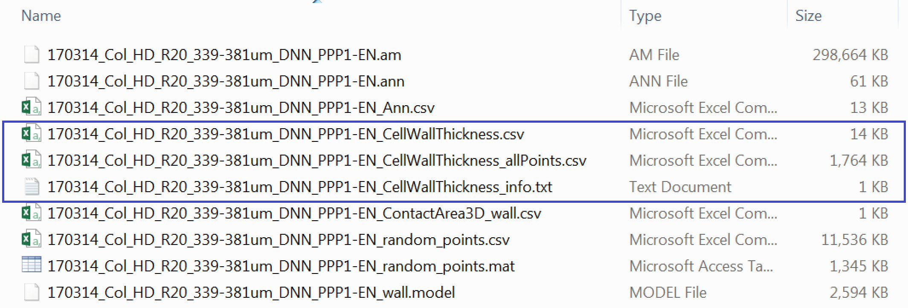

Wall Thickness
In this section we shift to a different biological question and we employ the last plugin developed for the Paterlini, Belevich et al. paper. Using the CellWallThickness plugin we will try to address the biological question of cell wall thickness around Plasmodesmata (or similar types of annotations along a given model). We ask: Is the cell wall in proximity of plasmodesmata different (in terms of thickness) compared to the wall average?
Run the CellWallThickness plugin
Make sure you have loaded your datasets, models and annotations as described in in the Preliminary Steps section.
From the MIB interface go to the Plugins tab -> Plasmodesmata -> CellWallThickness. A user interface will appear with fields to be filled in.
- “Select material for analysis” requires you to choose the correct segmented object for analysis
- Thin and remove branches button within the pre-processing box generates a midline of the model (in presence of branching points, keeps the longest branch) and temporarily stores it in the Mask layer of the .model file. For more details please see the paper.
A series of options are available for the analysis:
- Selecting “Analysis of pores” calculates the cell wall thickness in proximity of the plasmodesmata (or any other provided annotation), in addition to measuring the wall thickness at all positions on the midline of the model.
- Selecting “Analysis of randomly placed pores” calculates the cell wall thickness at control points (uniformly distributed over the same provided model) equal in number to the annotations provided. “Random number generator id” enables to reproduce results for the controls (generating the same random distributions for that particular model). The same id number needs to be used for such purpose. Every time you will run the plugin - on the same dataset - with that number you will obtain the same control points.
- In order to make the data classes (real or “closest” points, the random “simulated” points, and “all points”) independent, you need to press “Remove data points from all points” and “Remove random points from all points”. This ensures that no point from those classes will be included in the other class. * “Mark the distances” displays on the model the distance vectors that are being measured (at plasmodesmata and control positions).
Note: if you were to compare the overall cell wall thickness between interfaces (as performed in the paper) you would need to leave all boxes from the option section unclicked.
- Clicking “Export results to Matlab” displays the resulting values in Matlab. Clicking “Save results in Matlab, Excel or CSV format” conversely allows you to store these values in a file.
- “Save centerline thickness map” enables you to save the thinned model as an image, which can then be imported into rendering software.

After pressing “Continue”, when the process has finished a new window will appear with visual plots of the wall thickness values for the various categories being requested.
Check outputs
If the plugin has worked correctly and you followed the instructions to calculate the thicknesses at the positions of interest in the models your Data_individual_cells folder should now contain three additional files.
One is *_CellWallThickness_info.txt which is a text document containing info on the datasets. We won’t use this file. There is a *_CellWallThickness.csv file which contains the cell wall thicknesses at real and at an equal number of uniformly distributed control points. The third file *_CellWallThickness_allPoints.csv contains the cell wall thickness at every single point at the midline of our cell wall model.

If you want to analyse multiple datasets at the same, as we will do here, the processes described above need to be repeated for each .am file.
Processing the thicknesses in R
library(tidyverse)
#library(ggbeeswarm) called in the function so no need to load it
# IMPORTANT:
# the working directory is assumed to be the downloaded folder "Data_individual_cells" so paths are given relative to that. Make sure this is also the case in your R environment using the getwd and setwd
#first we can read the files containing all the points (or all other points depending on which options were selected)
Col_allwall <- list.files(path = ".", pattern = "CellWallThickness_allPoints.csv") %>% map_df(function(f){
x <- read.csv(f) %>%
as.data.frame %>%
mutate(DatasetFilename = f) %>%
mutate(Genotype = "Col-0") %>%
mutate(Interface = "PPP-EN") %>%
mutate(Positions = "All others")
})
#we edit the text of the DatasetFilename column to clean it
Col_allwall$DatasetFilename <- gsub("_CellWallThickness_allPoints.csv", "", Col_allwall$DatasetFilename)
# we rename the thickness column
Col_allwall <- Col_allwall %>% rename('Thickness_um'='Matrix.of.cell.wall.thickness.values.in.micrometers.for.each.point.of.the.masked.centreline')
# now we read the files containing thicknesses at real and control points
Col_wall <- list.files(path = ".", pattern = "CellWallThickness.csv") %>%
map_df(function(f){
x <- read.csv(f) %>%
as.data.frame %>%
mutate(DatasetFilename = f) %>%
mutate(Genotype = "Col-0") %>%
mutate(Interface = "PPP-EN")
})
#we edit the text of the DatasetFilename column to clean it
Col_wall$DatasetFilename <- gsub("_CellWallThickness.csv", "", Col_wall$DatasetFilename)
# we select the data relating to Pd positions (real)
Col_wall_pd <- select(Col_wall, "Genotype", "Interface", "DatasetFilename", "WallThicknessRealPores_um") %>%
# we rename the thickness column so that it will match with the one from all points
rename('Thickness_um'='WallThicknessRealPores_um') %>%
# we create a column describing the type of data
mutate(Positions = "PDs")
# we do the same for simulated points
Col_wall_sim <- select(Col_wall, "Genotype", "Interface", "DatasetFilename", "WallThicknessRandomPores_um") %>%
rename('Thickness_um'='WallThicknessRandomPores_um') %>%
mutate(Positions = "Rand. Unif. distributed")# we merge the two objects
Col_0 <- rbind(Col_wall_pd, Col_wall_sim, Col_allwall)
# we create a new column with the wall thickness in nm (a better unit for this biological scale) and we also impose an order on the Position classes for visual purposes
Col_0 <- Col_0 %>%
mutate("Thickness_nm" = Thickness_um*1000) %>%
mutate(Positions = factor(Positions, levels = c("PDs", "Rand. Unif. distributed", "All others")))
#we are now going to separate the dataset file name in two columns, one containing info on the root and one containing info on the actual cell
# we are going to duplicate the dataset column first
Col_0$Cell = Col_0$DatasetFilename
#in the dataset filename column we remove anything after _DNN
Col_0$DatasetFilename <- gsub("_PPP.*","", Col_0$DatasetFilename)
# in the column cell we remove anything before the name of the cell
Col_0$Cell <- gsub(".*PPP", "PPP", Col_0$Cell)
# PLOT VALUES FOR ONE CELL
ggplot(data=filter(Col_0, DatasetFilename=="170314_Col_HD_R20_339-381um_DNN" & Cell=="PPP1-EN"), aes(x = Positions, y = Thickness_nm, fill=Positions, colour=Positions)) + geom_violin(alpha=0.25) + theme_bw() +
stat_summary(fun.y = median, fun.ymin = median, fun.ymax = median, geom = "crossbar", size = 0.3, width = 0.4, alpha=1) +
labs(x = "Positions", y = "Wall thickness (nm)") +
theme(legend.position = "none") +
# the log scale is useful here because of the range of values
scale_y_log10() +
facet_wrap(DatasetFilename~Cell)# PLOT VALUES FOR MULTIPLE CELLS (and multiple genotypes)
# we summarise the values of thickness for each cell
stats <- Col_0 %>%
group_by(Genotype, Interface, DatasetFilename, Cell, Positions) %>%
dplyr::summarise(mean_thickness = mean(Thickness_nm))
# we drop the violins from the plot
# we introduce a dodge graphical parameter to better space the groups
dodge <- position_dodge(width = 0.4)
ggplot(data=stats, aes(x = Positions, y = mean_thickness, fill=Genotype, colour=Genotype, group = factor(Genotype))) + theme_bw() +
stat_summary(fun.y = median, fun.ymin = median, fun.ymax = median,
geom = "crossbar", size = 0.4, width = 0.5, alpha=1, position = dodge) +
# we differentiate the roots (datasets) via different shapes
ggbeeswarm::geom_quasirandom(aes(shape=DatasetFilename, fill=Genotype, colour=Genotype), width = 0.2, size= 2, alpha=0.5, dodge.width = 0.8, show.legend = FALSE) +
labs(x = "Positions", y = "Wall thickness (nm)") +
facet_grid(~Interface) +
# here the manual scales are a bit redundant but useful when multiple genotypes present
scale_color_manual(values=c("#000000")) +
scale_fill_manual(values=c("#000000")) +
scale_y_continuous(limits = c(20,180)) +
scale_shape_manual(values=c(19,17))We have reached the end of this guided pipeline. We hope you will employ the tools we developed for the Plasmodesmata community. Please feel free to share feedback!
Good luck with your research!